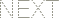

한국GRE+기출대전 61일 완성
Day61
HOME
-----------
Day 1
Day 2
Day 3
Day 4
Day 5
Day 6
Day 7
Day 8
Day 9
Day 10
Day 11
Day 12
Day 13
Day 14
Day 15
Day 16
Day 17
Day 18
Day 19
Day 20
Day 21
Day 22
Day 23
Day 24
Day 25
Day 26
Day 27
Day 28
Day 29
Day 30
Day 31
Day 32
Day 33
Day 34
Day 35
Day 36
Day 37
Day 38
Day 39
Day 40
Day 41
Day 42
Day 43
Day 44
Day 45
Day 46
Day 47
Day 48
Day 49
Day 50
Day 51
Day 52
Day 53
Day 54
Day 55
Day 56
Day 57
Day 58
Day 59
Day 60
Day 61
6001
withdrawn
adj. 인적 드문/수줍은
recluse : withdrawn
::
bigot : biased
withdrawn
↔
expansive
6002
wither
v. 시들다/풀이 죽다
: to lose vitality, force, or freshness
wither : vitality
::
dehydrate : water
wither
↔
burgeon
wither
↔
flourish
wither
↔
revive
withered
↔
lush
cultivate
↔
cause to wither
6003
withered
adj. 시든
withered
↔
lush
6004
withhold
v. 보류하다/만류하다
: to refrain from granting, giving, or allowing
withhold
↔
grant
withhold
↔
proffer
withhold
↔
tender
apprise
↔
withhold information
nurture
↔
withhold sustenance from
subside
↔
withhold pressure
6005
withhold information
정보[지식]을 주지않고 두다
apprise
↔
withhold information
6006
withhold pressure
압력[압축, 압착]을 억누르다[억제하다, 말리다]
subside
↔
withhold pressure
6007
withhold sustenance from
생계 수단을 억제하다,음식물을 억제하다
nurture
↔
withhold sustenance from
6008
without notches
톱니모양이 아닌
serrated
↔
without notches
6009
without restraint
자유로이, 거리낌 없이
bridled
↔
without restraint
6010
without to intrude
간섭하지 않다, 방해하지 않다
trespass
↔
without to intrude
6011
without wisdom
현명함이 없는
sagacious
↔
without wisdom
6012
wizen
adj. 시든
: to become dry, shrunken, and wrinkled often as a result of aging or of failing vitality
wizen : vitality
::
dehydrate : water
wizened
↔
blooming
wizened
↔
thriving
6013
wizened
adj. 시든
shriveled; withered; shrunken
wizened
↔
blooming
wizened
↔
thriving
6014
wobble
v. 동요하다/흔들거리다
: to move or proceed with an irregular rocking or staggering motion or unsteadily and clumsily from side to side
wobble
↔
stabilize
6015
woo
v. 구애하다
: to sue for the affection of and usually marriage with
woo : adore
::
adulate : fawn
(=)
woo : adorn
::
adulate : fawn
6016
wordsmith
n. 문장가
: a person who works with words
wordsmith : writing
::
raconteur : storytelling
6017
wordy
adj. 말많은
wordy
↔
pithy
6018
worldly
adj. 세속적인/평범한
: of, relating to, or devoted to this world and its pursuits rather than to religion or spiritual affairs
worldly
↔
ethereal
worldly
↔
naive
worldly
↔
singular
worldly
↔
spiritual
worldly
↔
spiritually
6019
worsen
v. 악화하다/악화시키다
worsen
↔
palliate
6020
worship
n. 숭배
: extravagant respect or admiration for or devotion to an object of esteem
worship : sacrifice
::
prediction : augury
6021
worthless
adj. 가치 없는
worthless : covet
::
:
worthless
↔
sublime
6022
wrangler
n. 카우보이
: a ranch hand who takes care of the saddle horses
lariat : wrangler
::
crook : shepherd
6023
wretchedness
n. 비참함/야비함
elation : wretchedness
::
:
wretchedness
↔
elation
6024
writ
n. 영장/공식 문서
: a formal written document; specifically :a legal instrument in epistolary form issued under seal in the name of the English monarch
6025
wry
adj. (얄궂게)익살스러운/비꼬는
: cleverly and often ironically or grimly humorous
: having a bent or twisted shape or condition
humorous : wry
::
fluent : glib
{meticulous : finicky} 는 답아님!
wry
↔
direct
wry
↔
even
wry
↔
straight
wry
↔
true
wry
↔
undeviating
6026
yacht
n. 요트
6027
yardstick
n. 야드 자
yardstick : length
::
gauge : pressure
yardstick : length
::
scale : weight
6028
yaw
v. 한쪽으로 흔들리다/빗나가다
: of a ship :to deviate erratically from a course (as when struck by a heavy sea); especially :to move from side to side
6029
yawn
v. 하품하다
: to open the mouth wide usually as an involuntary reaction to fatigue or boredom
yawn : sleepiness
::
blush : embarrassment
6030
yield
v. 양보하다/포기하다/따르다
: to surrender or relinquish to the physical control of another
adamant : yield
::
cautious : gamble
adamant : yield
::
deferential : offend
compliant : yield
::
obsequious : fawn
intransigent : yield
::
ephemeral : abide
pliant : yield
::
evanescent : disappear
(=)
{transparent : penetrate}는 답아님!
tenacious : yield
::
beneficent : harm
(↔)
tenacious : yield
::
insouciant : worry
(↔)
yield : resist
::
default : pay
(↔)
acquiesce : yielding
::
capitulate : categorical
(↔)
yield
↔
adamant
yield
↔
outmaneuver
yield
↔
prevail
adamant
↔
inclining to yield
yielded
↔
dogged
yielding
↔
tenacious
yieldable
↔
tenacious
unyielding
↔
meek
unyielding
↔
pliant
6031
yieldable
adj. 순종하는
yieldable
↔
tenacious
6032
yielded
adj. 다산의/유연한/순종하는
yielded
↔
dogged
6033
yielding
adj. 순종하는
acquiesce : yielding
::
capitulate : categorical
(↔)
yielding
↔
prevail
품사불일치
yielding
↔
tenacious
unyielding
↔
meek
unyielding
↔
pliant
6034
yoke
v. 결합시키다/속박하다
: to join as if by a yoke
yoke
↔
asunder
yoke
↔
sunder
yoke
↔
tear
yoking
↔
asunder
6035
yokel
n. 시골뜨기
yokel : sophistication
::
coward : courage
6036
zeal
n. 열정
: eagerness and ardent interest in pursuit of something
zeal : dedication
::
mesmerism : interest
(>)
zeal : dedication
::
rage : anger
zealous : dedication
::
mesmeric : interest
(>)
zealous : enthusiastic
::
idolatrous : devoted
devoted : zealous
::
careful : fastidious
(<)
zealot : adherent
::
fanatic : admirer
(>)
zealot : blase
::
miser : munificent
zealot : eager
::
bore : uninterested
zealot : eager
::
martinet : disciplined
fervor : zealot
::
doubt : skeptic
fervor : zealot
::
improvidence : spendthrift
zeal
↔
torpor
zeal
↔
vapid
zealot
↔
indifference
zealotry
↔
lack of fervor
zealous
↔
apathetic
zealous
↔
apathetical
zealous
↔
lack of fervor
zealous
↔
vapid
6037
zealot
n. 광신자
zealot : adherent
::
fanatic : admirer
(>)
zealot : blase
::
miser : munificent
zealot : eager
::
bore : uninterested
zealot : eager
::
martinet : disciplined
fervor : zealot
::
doubt : skeptic
fervor : zealot
::
improvidence : spendthrift
zealot
↔
indifference
zealotry
↔
lack of fervor
6038
zealotry
n. 열광/열광적 행위
zealotry
↔
lack of fervor
6039
zealous
adj. 열성적인
enthusiastically devoted to something; fervent
devoted : zealous
::
careful : fastidious
(<)
zealous : dedication
::
mesmeric : interest
(>)
zealous : enthusiastic
::
idolatrous : devoted
zealous
↔
apathetic
zealous
↔
apathetical
zealous
↔
lack of fervor
zealous
↔
vapid
6040
zenith
n. 정점/천정
highest point; peak; pinnacle
zenith
↔
lowest nadir
zenith
↔
lowest point
zenith
↔
lowliness
zenith
↔
nadir
6041
zest
n. 흥미
: keen enjoyment
zesty
↔
bland
zesty
↔
vapid
6042
zesty
adj. 풍미가 있는
zesty
↔
bland
zesty
↔
vapid
6043
zig
n. 급격한 방향 전환
zig
↔
lineation
6044
zigzag
n. 지그재그형
: one of a series of short sharp turns, angles, or alterations in a course
zigzag : turns
::
montage : images
zigzag
↔
lineate
6045
zone
v. 구획하다
: to partition (a city, borough, or township) by ordinance into sections reserved for different purposes (as residence or business)
zoning : lands
::
allocation : funds

WORDCOOK.COM | 2005.01.08 | version 1.0